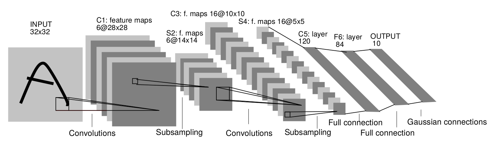
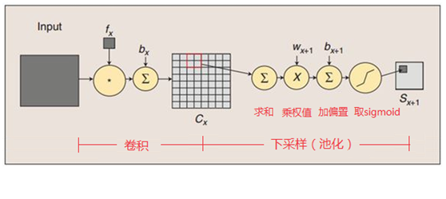
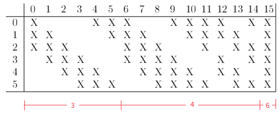

LeNet¶
论文地址： LeNet-5 convolutional neural networks
LeNet 诞生于1994年，是最早的卷积神经网络之一，并且推动了深度学习领域的发展。从1988年开始，在许多次 成功迭代后，这项由Yann LeCun完成的开拓性成功被并命为 LeNet5。
LeNet-5 Architecture¶

input
输入为 32*32 的图像
C1层
卷积层，kernel_size = 5*5, step = 1, no padding,根据下式可知，生成的特征图大小为 28*28。
\[\begin{split}OH = \frac{H + 2P -FH}{S} + 1\\ OW = \frac{H + 2P -FH}{S} + 1\end{split}\]
- 参数个数
\((5 \times 5 + 1) \times 6 = 156\) , 其中 1 为bias
- 连接数
\((5 \times 5 + 1) \times 6 \times 28 \times 28 = 122304\)
S2层
降采样，kernel_size = 2*2, step = 2, no padding,生成的feature map大小为 14*14。 该层的计算过程如图：2*2 单元的值相相加乘以参数w，再加上偏置b，然后取sigmoid，作为对应该单元的值。

- 参数个数
S2层由于每个特征图都共享相同的w和b，池化不需要参数，因此需要2*6=12个参数
C3层
有16个卷积核，卷积模板大小为5*5。
- 参数个数
需要注意的是，C3与S2并不是全连接而是部分连接，有些是C3连接到S2三层，四层甚至6层，通过这种方式提取更多特征，连接规则如下：
例如第一列表示C3层的第0个特征图（feature map）只跟S2层的第0、1和2这三个feature maps相连接，计算过程为：用3个卷积模板分别与S2层的3个feature maps进行卷积，然后将卷积的结果相加求和，再加上一个偏置，再取sigmoid得出卷积后对应的feature map了。其它列也是类似（有些是3个卷积模板，有些是4个，有些是6个）。因此，C3层的参数数目为（5×5×3+1）×6 +（5×5×4+1）×9 +5×5×6+1 = 1516
S4层
与S2相似，特征图的大小为5*5
C5层
特征图的大小为1*1，共有120个特征图。
F6层
全连接层，有84个单元，之所以选这个数字的原因是来自于输出层的设计。
output层
output层也是全连接层，共有10个节点，分别代表数字0到9。